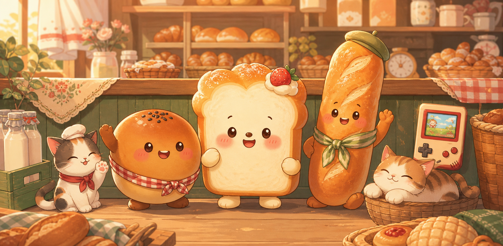

調理パン通信
bread friend recipe booth
choose a crumb mood, a flavor constellation, and a snack scale. the bakery bot will sketch a Japanese chori-pan recipe.
pan-chan online

調理パン通信
choose a crumb mood, a flavor constellation, and a snack scale. the bakery bot will sketch a Japanese chori-pan recipe.